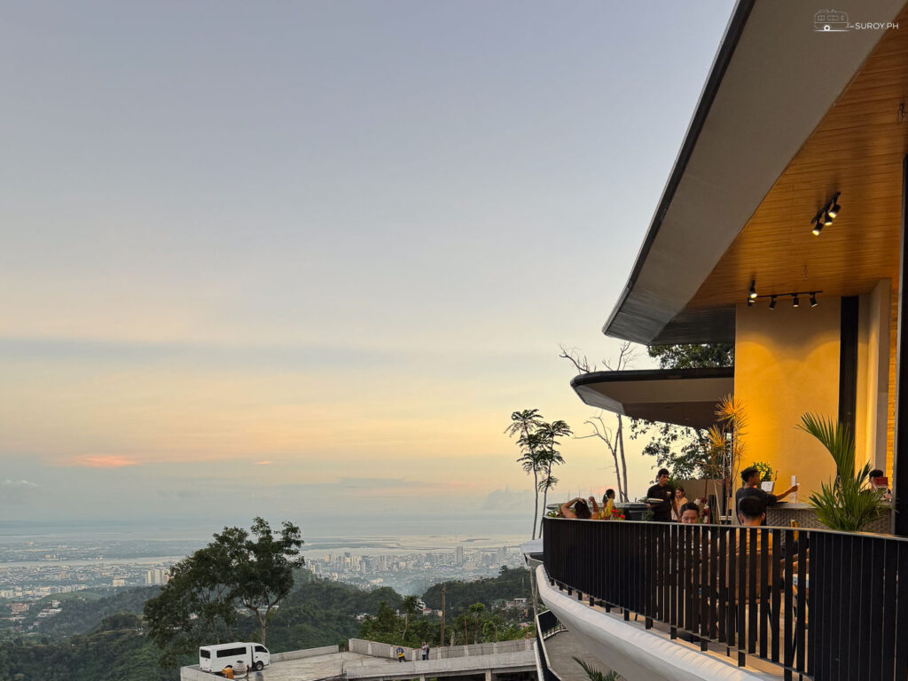
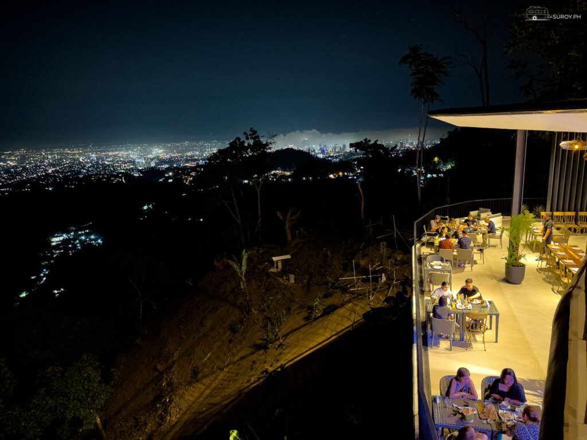

BUSAY, CEBU · A TABLE ABOVE THE CITY
A little closer
to the sky.
Come for the view. Stay for the moments.
Good food, great company, and Cebu at your feet.
10° N · 123° E
★ 4.3 74 Google reviews
Filipino favorites & comfort classics
₱500–2,500 per person
Dine-in & takeout
THE VIEW IS JUST THE BEGINNING
Leave the city.
Keep the connection.
Tucked into the highlands of Busay, The Cliff brings everyone a little closer. A family dinner that lingers. A date with the city lights. A milestone worth raising a glass to.
Find your seat, share something delicious, and let the evening unfold.
Meet us in the highlands ↗
MOMENTS THAT STAY WITH YOU
“The vibes are immaculate as well,
very intimate and overlooking the city.”
For family dinners. For date nights. For just because.
WE’LL SEE YOU UP HERE
Your next
little escape.
The Cliff at Highlands de Busay
1711 Cebu Tops Rd
Cebu City, 6000 Cebu, Philippines
Planning a special evening? Reach out to the restaurant ahead of your visit for table availability and current opening hours.